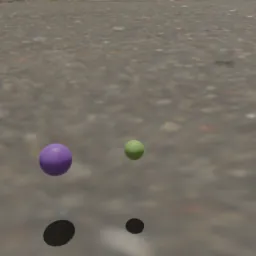
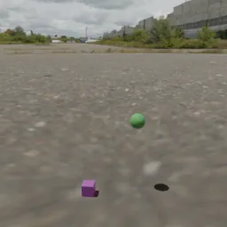
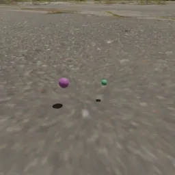
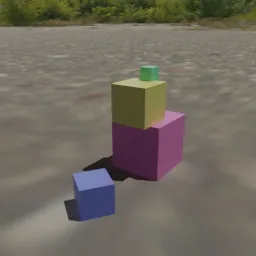
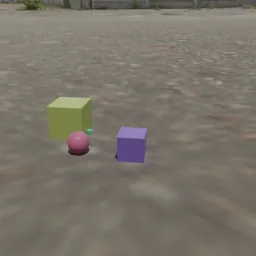
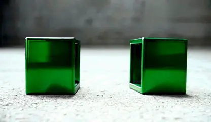
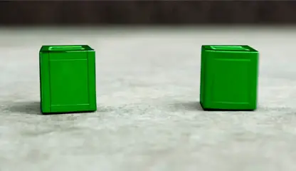
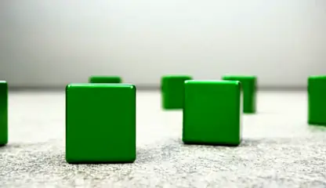
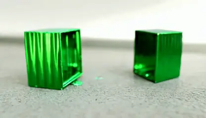

Vuelo libre · R5
Rebote · R3a
Choque · R3b
Pila · R2
Contacto · R1El render tomó 1,12 s por cuadro a 256 por 256 píxeles.
Kubric corre en el servidor con udocker, y una corrida de prueba dio archivos idénticos byte a byte a los locales.
108 clips de 25 escenas no usadas. La mejora es de 0,163, con un intervalo entre 0,066 y 0,259.
Diagnóstico en el modo de mayor calidad sobre los 426 clips de calibración; se muestran seis de las ocho etapas del extractor.
Cada revisión tiene casos construidos a mano cuya respuesta se calcula dentro de la prueba, sin el simulador.
| Falla encontrada | Antes | Después |
|---|---|---|
| Rebotes fuera de tolerancia | 35 de 40 | 0 |
| Choques fuera de tolerancia | 11 de 11 | 0 |
| Saltos en clips limpios | 0,18 a 0,32 | < 0,003 |
| Cilindro mal apoyado | 0,1014 | 0 |
La causa de los rebotes y choques: PyBullet guarda la velocidad con medio paso de desfase, y un error de 0,05 se medía como 0,0436. Se volvieron a renderizar 175 clips.
Cuantil conformal al 0,05 del clip limpio de cada escena, con al menos 19 escenas.
Validación cruzada agrupada por escena, con intervalo de Clopper-Pearson.
Curva logística del tamaño de error que se detecta con fiabilidad del 95 %.
Cota inferior del índice de Youden, es decir, cuánto separa clips con error de clips limpios.
τb de Kendall con bootstrap de escenas: se cumple si su cota inferior y la del Youden son mayores que cero.
| Iteración | Qué cambió | Cumplen |
|---|---|---|
| it1 | Tres errores: objetos tapados contados como desaparecidos, un filtro que no dejaba ninguna caída y un factor de incertidumbre mal calculado | 1 |
| it2 | Gravedad con GeoCalib: 5,2° de error en lugar de 22 a 28° | 1 |
| it3 | Profundidad más grande y contactos por movimiento | 1 |
| it4 | Saltos medidos contra el ruido de su trayectoria y tamaño contra los otros objetos | 2 |
En la it4 la ganancia viene de cambiar la forma de medir y no de percibir mejor, y así se reporta.
τb de Kendall con su intervalo, vista principal de 317 clips y 72 escenas. El tamaño y el valor de g ordenan los niveles, pero su índice de Youden no se separa de cero.
Una revisión sale del video real si sus falsas alarmas ahí tienen una cota inferior mayor que 0,10.
La prueba que decide H1 es un conjunto nuevo de Kubric, sellado y todavía en extracción.
En Kubric los tamaños se sortean, así que se aprendió de Objectron, con videos reales medidos en metros: un modelo por cada una de sus 9 clases.
La mayor fuente de error de la escala ya no es el tamaño sino el ángulo de visión supuesto. La escala solo entra en el valor de g.
Qué parte de los casos cae dentro del intervalo. La línea negra marca lo que debería cubrir.
A una desviación quedó bien. A dos, seis de las nueve medidas siguen por debajo de 0,90, porque el error tiene colas más pesadas que una normal.
Una revisión se abstiene si su intervalo cruza el umbral o si le falta una entrada.
El riesgo es bajo porque el verificador responde en un tercio de los casos, y por eso los dos números se reportan juntos.
La abstención cuenta como plausible. El corte se fijó antes en 619 videos de desarrollo y la prueba se corrió una sola vez con la versión congelada.
| Métrica | Verificador | VLM |
|---|---|---|
| Exactitud | 0,444 | 0,650 |
| Exactitud balanceada | 0,502 | 0,642 |
| κ de Cohen | 0,003 | 0,281 |
| Área bajo la curva | 0,478 | 0,676 |
| Solo en los 75 que decide | 0,600 | 0,653 |
McNemar da p menor que 0,001 a favor del VLM. La diferencia observada, de 20,6 puntos, duplica la mínima que la prueba podía detectar, así que no es falta de muestra.
Cuatro candidatos de Wan2.1-1.3B para el mismo texto: "dos cubos verdes de metal se acercan sobre un piso de concreto y chocan". Ensayo del 18 de octubre, con notas provisionales.




Demostración con un reporte por revisión sobre dos escenas fijas: dominós y torre de bloques. H3 se prueba con Wilcoxon contra el modelo base eligiendo el mejor de 8, con el juez de VideoPhy-2 si coincide en el 90 % de 50 videos revisados a mano.
Con la verdad del simulador cumplen las nueve, en calibración y en evaluación.
La predicción se cumplió y las falsas alarmas no pasaron del 2,9 %.
Cumplen 2 de 9 con lo percibido, y en H2 el VLM queda arriba.
La profundidad de cada objeto y los contactos, de los que dependen cinco medidas.
| Pendiente | Estado |
|---|---|
| Conjunto nuevo de Kubric para la prueba final de H1 | Sellado, en extracción |
| Control real nuevo: vistas laterales de Physics-IQ y Objectron | Sellado |
| Quinta iteración: profundidad y contactos | Hasta el 10 de noviembre |
| Separar a mano los errores de la comparación con el VLM | Por hacer |
| H2 repetida en un conjunto sellado nuevo | Después de la quinta iteración |
| →EspacioEnter | Siguiente diapositiva |
| ←Retroceso | Diapositiva anterior |
| InicioFin | Primera / última |
| Clic derecha / izquierda | Siguiente / anterior |
| F | Pantalla completa |
| T | Iniciar o pausar el temporizador |
| R | Reiniciar el temporizador |
| H | Ocultar o mostrar el temporizador |
| ?K | Mostrar u ocultar esta ayuda |
| Esc | Cerrar esta ayuda |